Разблокировка

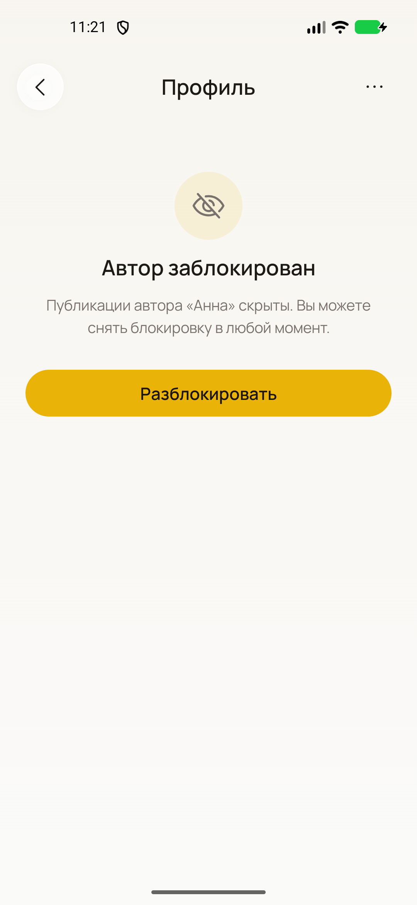

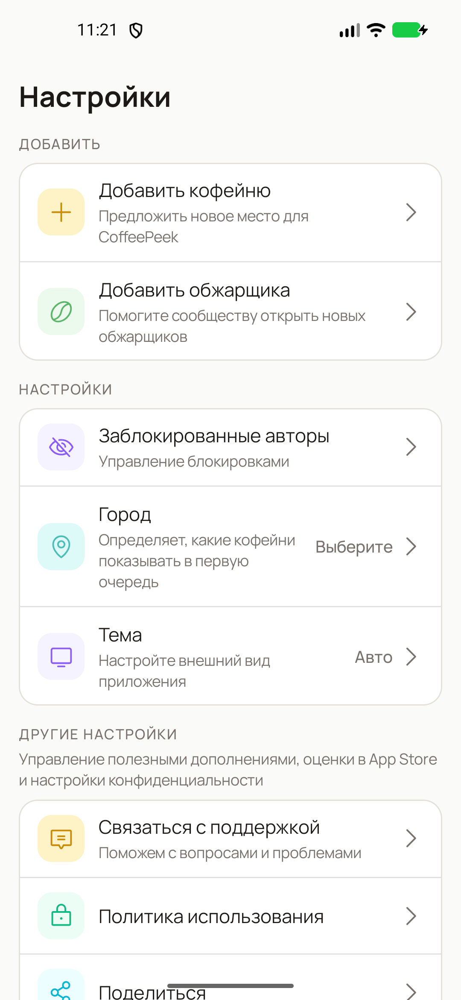

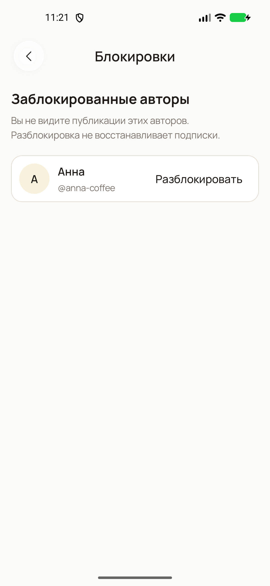

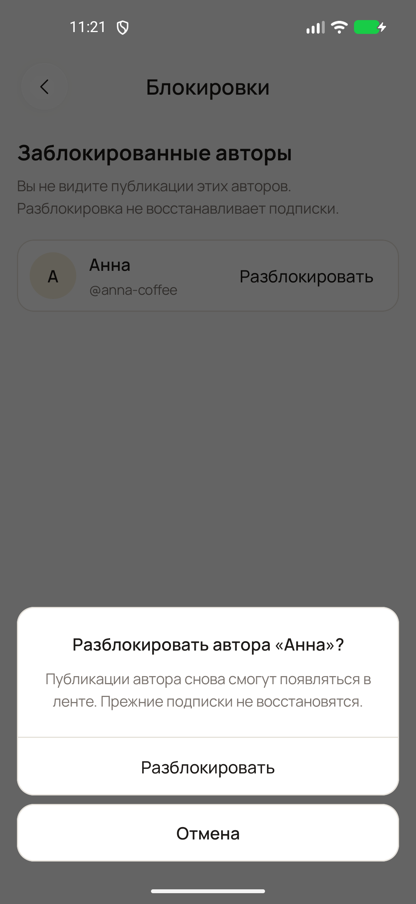

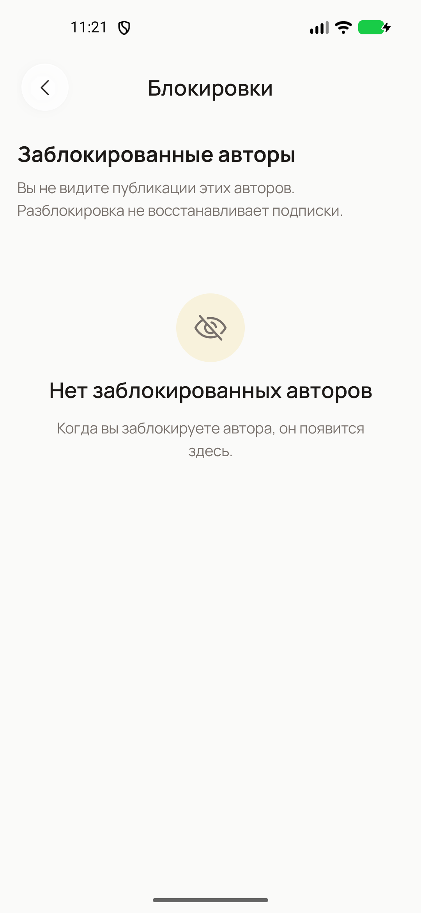

22 реальных Android-скриншота на эмуляторе Pixel 5. Используются реальные компоненты приложения и локальные тестовые данные. Нажмите на любой экран, чтобы открыть оригинал 1080 × 2340.
Основной путь: Лента → меню чужого чек-ина → «Заблокировать автора» → подтверждение → сохранение → публикации автора скрыты. Разблокировка: Настройки → Заблокированные авторы → Разблокировать → подтверждение → публикации возвращаются. Отмена не меняет состояние, ошибка предлагает повтор.
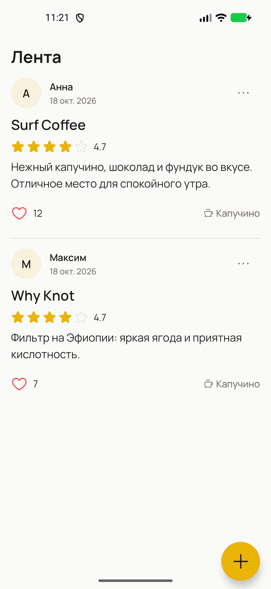
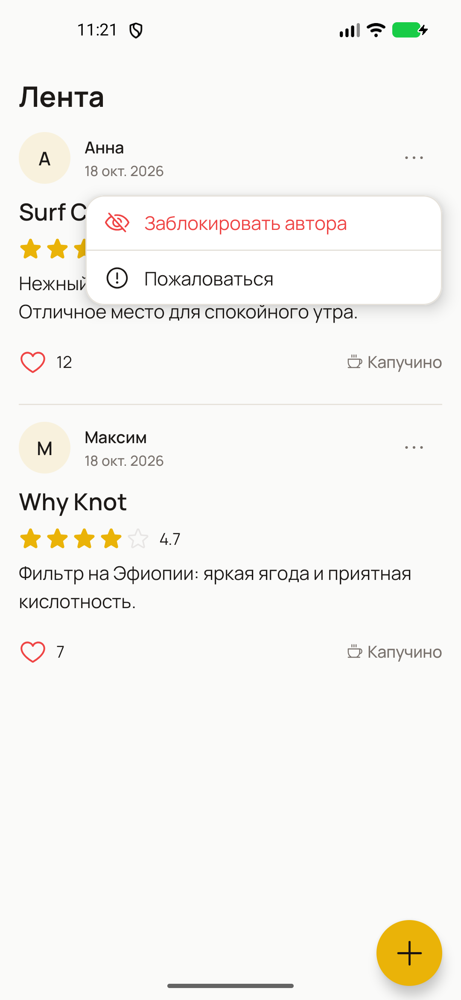
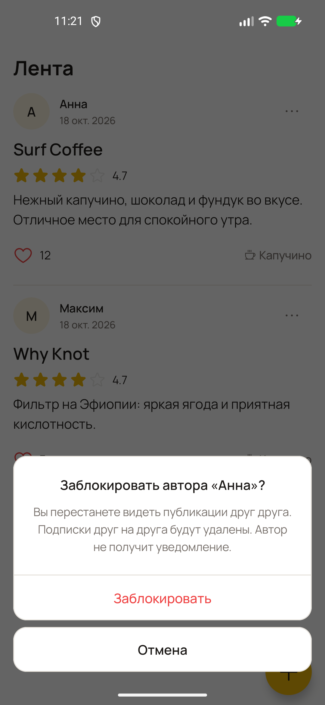
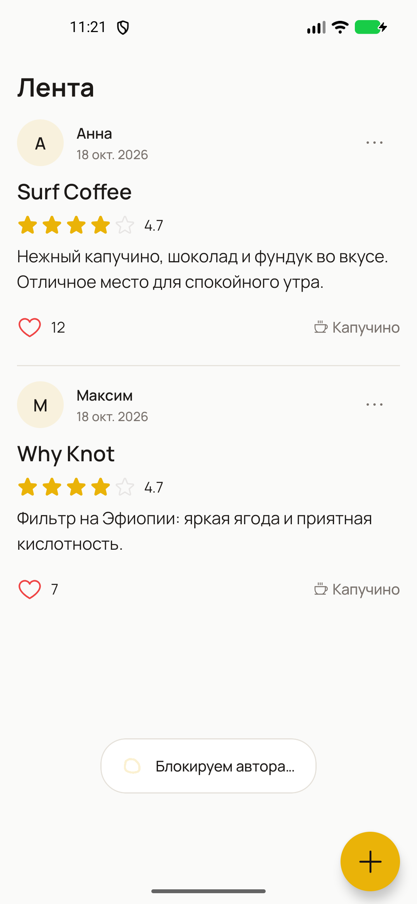
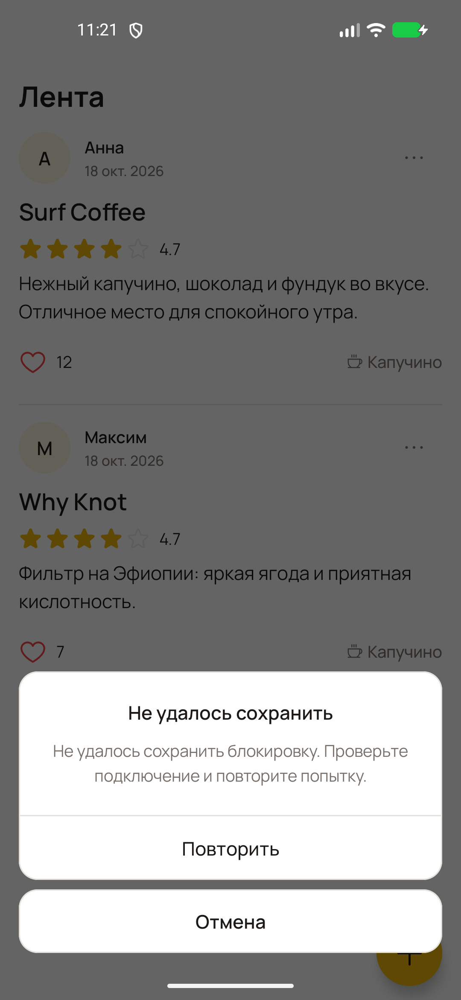
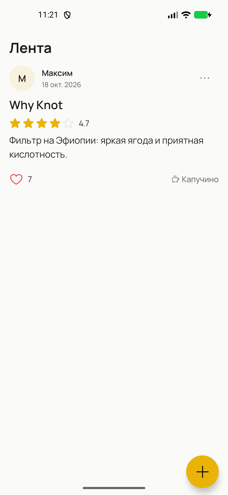





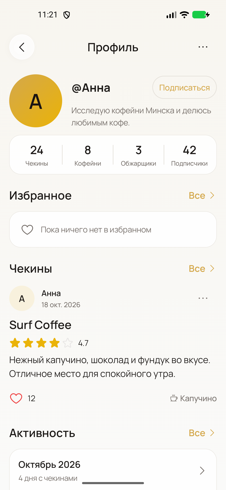
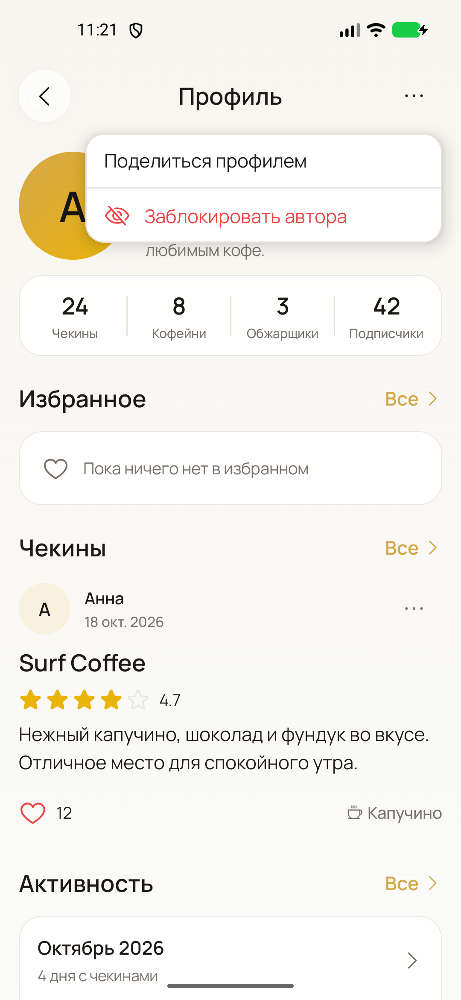
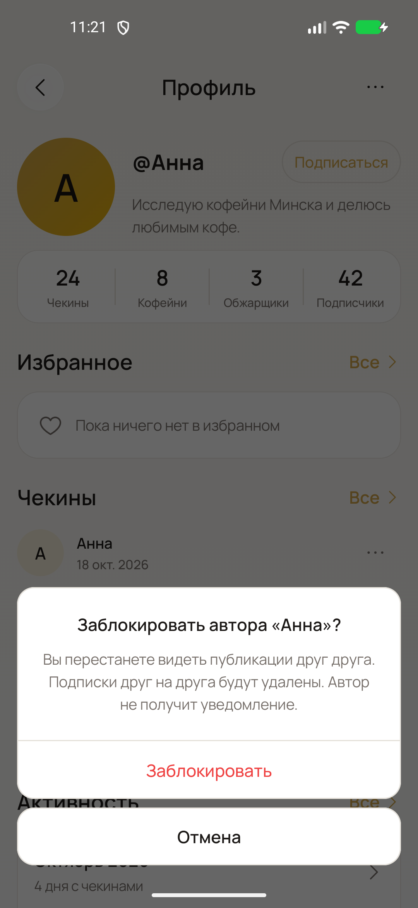
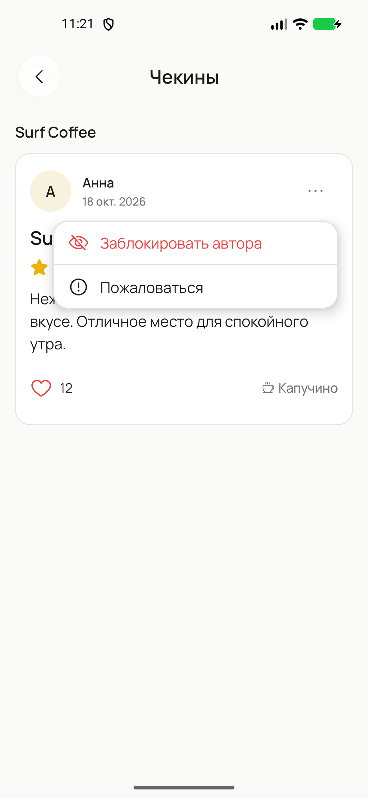
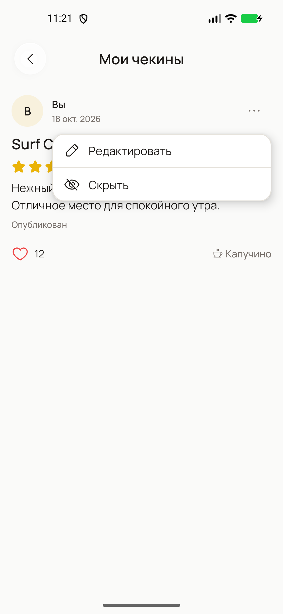
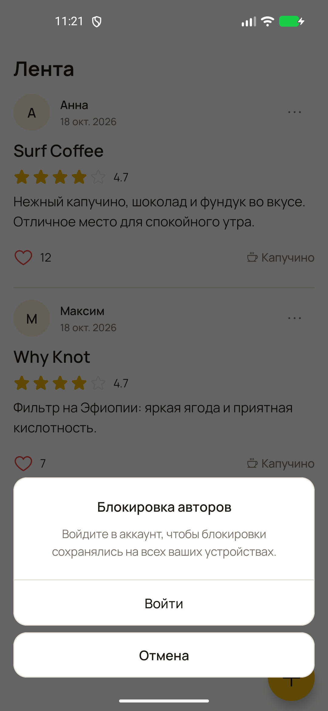
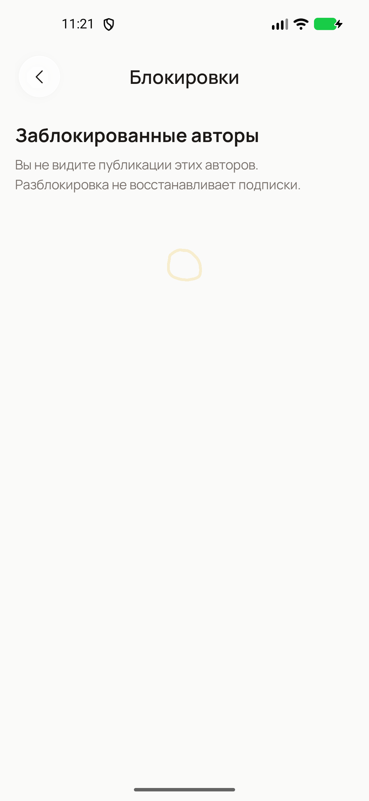
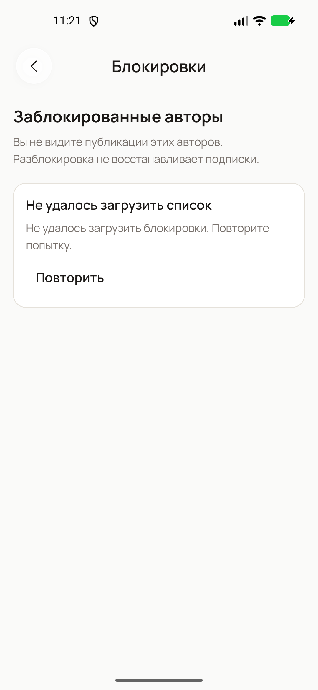
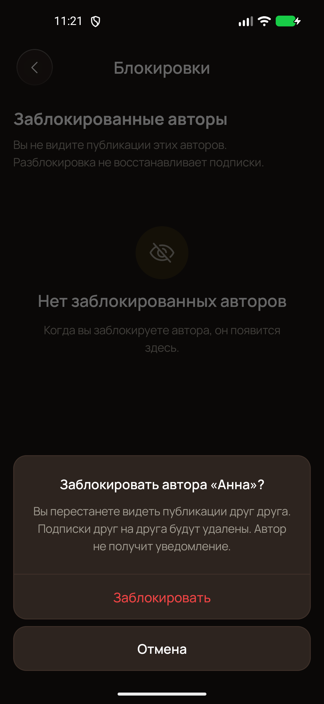
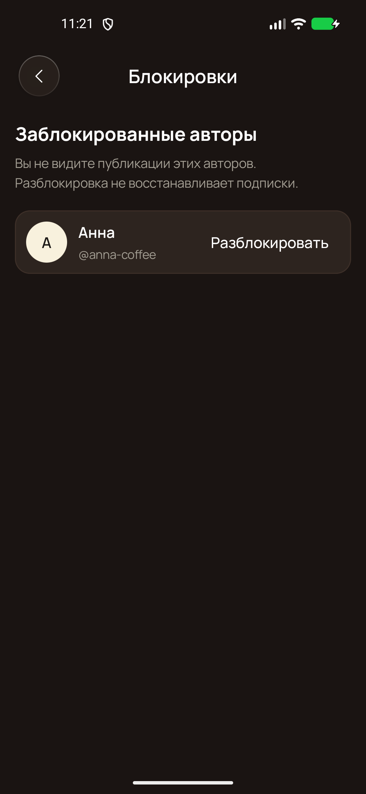